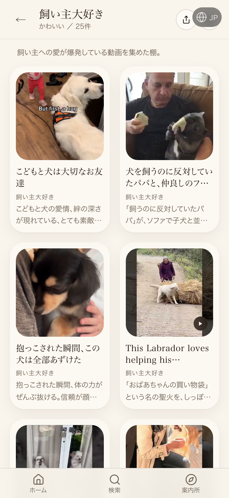
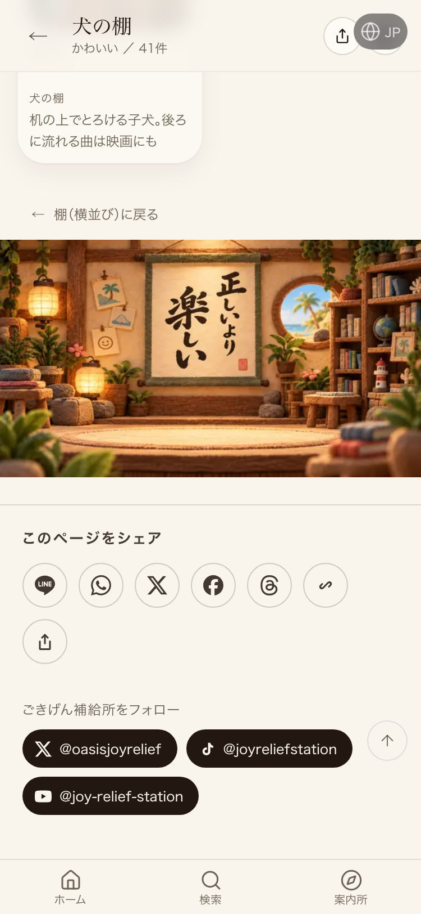
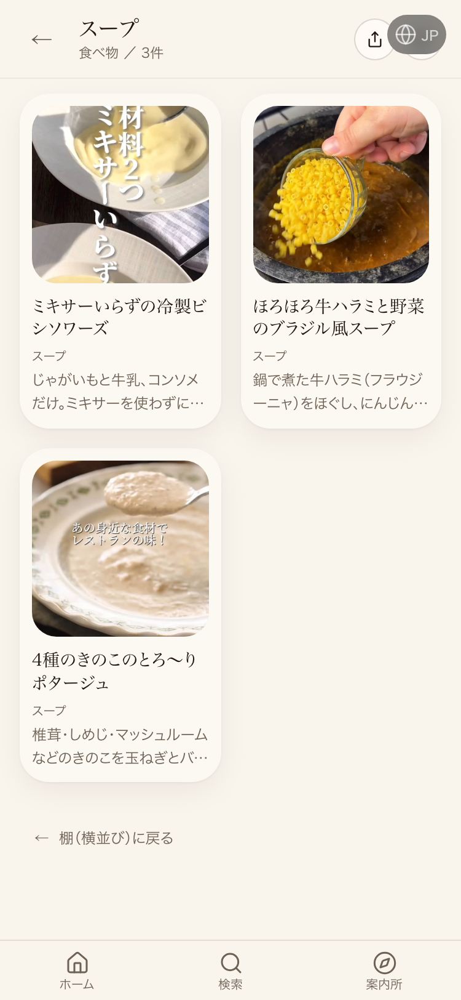

| 確認項目 | 結果 |
|---|---|
| 抱っこされた瞬間→飼い主大好き | 反映済み（スクショで実写確認） |
| 白菜と肉の鍋→スープ | DBのpicksには存在(deleted_at無し)だが本番表示は3件のみで未確認 |
| さつまいも→スープ | DBのpicksには存在(deleted_at無し)だが本番表示は3件のみで未確認 |
| 抱っこされた瞬間→犬の棚 | 犬の棚が50枚満杯(実測61枚)のため見送り |
| 褒めたのに柴犬に怒られた→犬の棚 | 同上。満杯のため見送り |
| 投げ込み箱の受付一覧ページ | 200で生存・機能（2026-10-01時点で既に出来ていたもの） |